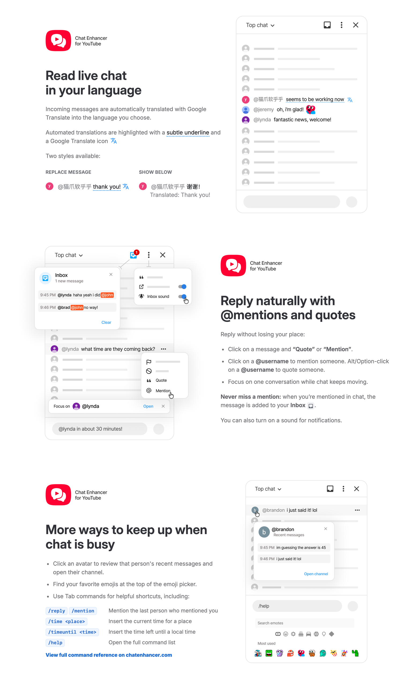

Translate Live Chat
Choose a target language from YouTube's live chat settings and decide whether translations replace messages or appear below.
Browser extension for YouTube live chat
Translate messages, mention and quote users, revisit chat context, catch mentions, reuse emojis, and run quick commands without replacing YouTube's native chat.
Built for live streams
Choose a target language from YouTube's live chat settings and decide whether translations replace messages or appear below.
Use YouTube's message menu, author clicks, profile cards, or slash commands to mention and quote people faster.
Open an avatar card to review a user's recent messages in the current chat and jump to their channel when needed.
Keep a local list of recent messages that mention your handle, with an optional subtle sound for new mentions.
Add a compact row of your most-used emojis to YouTube's emoji picker so common reactions are always close.
Press Tab to expand commands for mentions, quotes, repeated messages, time helpers, and extension settings.
View command referenceScreenshots

Install
Install from your browser's extension store when available, or build the extension from source for local development.
Privacy
The extension is designed to keep routine chat enhancements on your device. Translation is the one feature that needs an external service, and it only runs after you choose a target language.
Most features run in your browser. Settings are saved with your browser's extension storage so they can follow your extension install. Your mentions inbox and frequent emoji counts are stored locally on your device.
Recent profile messages are only kept in memory for the current chat page. When you leave or reload the page, that temporary recent-message context is cleared.
Translation is off by default. When you choose a translation language, chat message text is sent to the Google Translate endpoint so the translated text can be shown in chat.
Chat Enhancer for YouTube does not sell user data and is not affiliated with YouTube or Google.
Reference
Type a command in YouTube's chat input, then press Tab.
Commands do not send automatically, and unknown slash commands are
left alone. Use // to send a literal slash command.
Inline commands: /mention,
/reply, /time, and
/timeuntil can expand inside a sentence.
Whole-input commands: /help,
/quote, /again, /repeat,
and all /set... commands should be the only text in
the input.
/mention or /reply/quote/again or /repeat/time utc/timeuntil 7:45pm/help
Time aliases include utc, tokyo,
jst, seoul, kst,
london, paris, madrid,
nyc, et, la, and
pt.
/settranslateto englishoff to disable translation./settranslationdisplay replacebelow to show translations underneath./setquotelength 12080, 120, 180, or 240./setmentionsound on/setopenchannelsinpopup onoff to open them normally.
/timeuntil accepts formats like 7,
7am, 7:45 am, 19:00,
and 19:00:30.